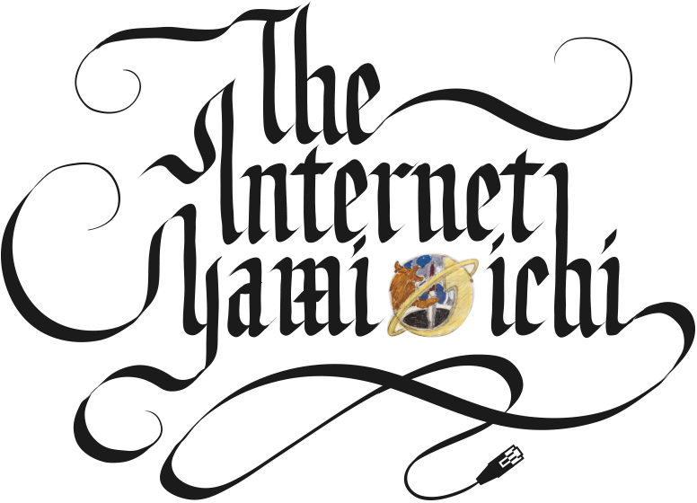
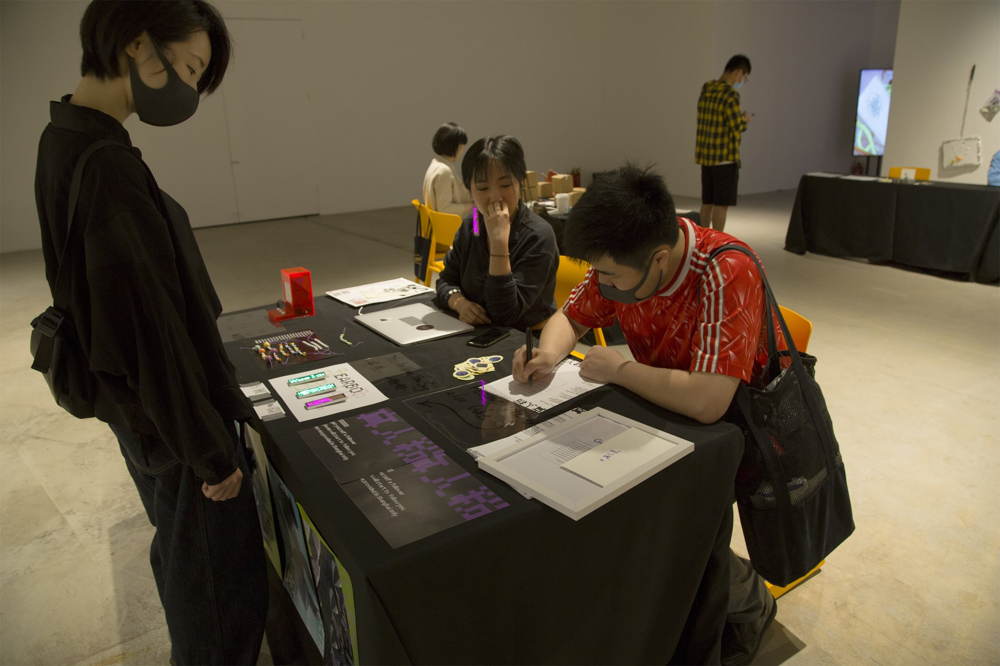
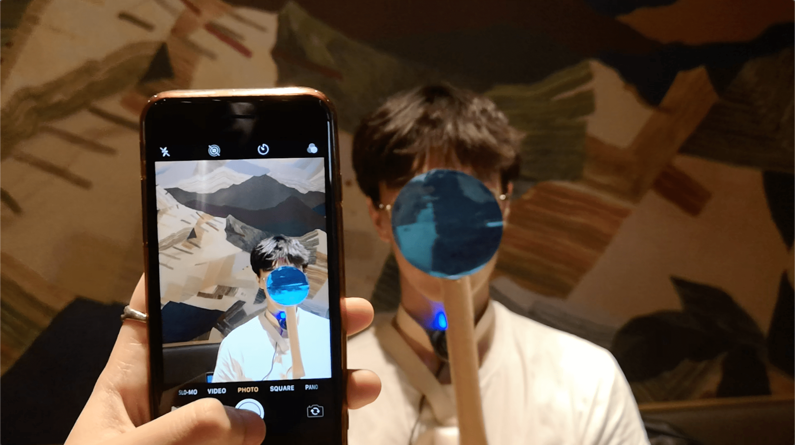
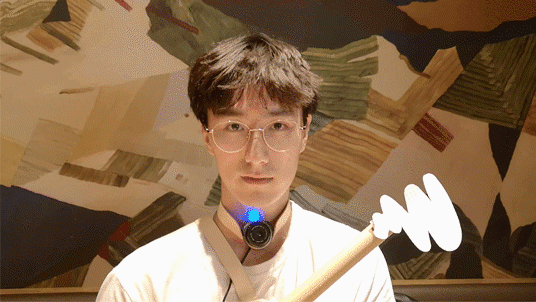
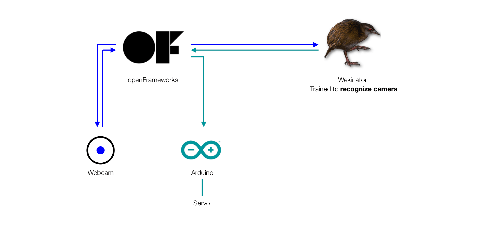
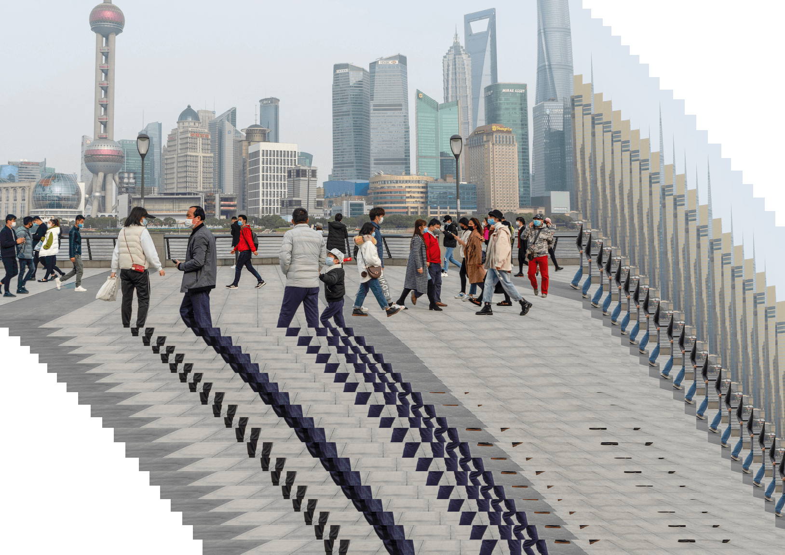
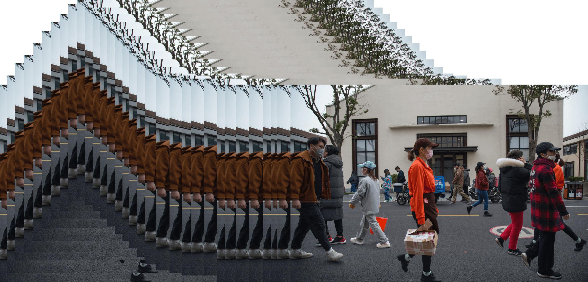
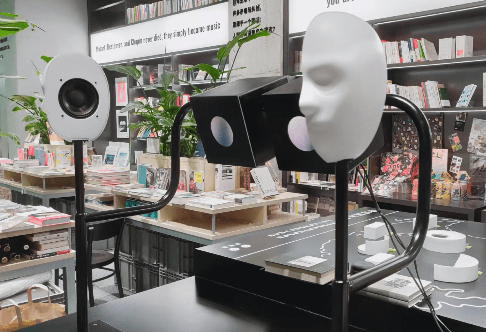
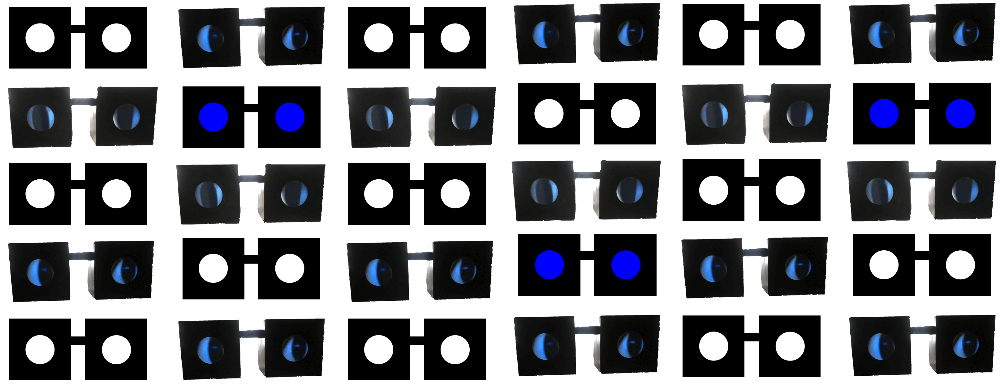

tenretnI >>  Internet Yami Ichi Booth
The Internet Yami-Ichi is a flea market
where people consumed by theInternet can share and buy Internet-related things in real life. In this
weird market, you can browse through the booths and find the amazing and the useless—in an ironic and humorous
atmosphere reminiscent of the early Internet era. The Internet Yami-Ichi is also an art project that aims to
materialize the virtual Internet through a performative fleamarket.
My booth sells four items during the Internet Yami Ichi at Chronus Art Center (CAC), Shanghai. They are EARBO,
404 BRACELETS, a real life FOLLOWER and some Tinder Usage DATA.
>EARBO is a decentralized non-censorship wearable microblogging and
social networking service on which users post messages
through bluetooth. You Are What You Say.
>Numbers on the 404 BRACELETS are invalid proxy ip addresses, which once carried their users through the Great Firewall in the mainland Chinese context.
The uniqueness of a certain IP address also make that bracelet unique.
And, when all the IPv4 addresses are used up in the near future, these bracelets will also become a testimony of the good old days.
>
Buy a real life FOLLOWER with a little bit of your privacy — your phone number and your home address —
then I will follow you in real would some day.
>Three anonymous Tinder users would like to sell their tinder usage data claimed from Tinder.
The data includes
daily
data of times of app opening, times of left swiping and right swiping, matches, the amount of message sent,
and received.
I made a glowing pink ATM interface for them, customers can pay and get a receipt-like printed data, umm, receipt.

Paranoid Pal
about
Paranoid Pal is your wearable pal that protects you from any kind of cameras.
why
It seems that putting selfies on Facebook is not a good idea any more, and setting instagram accounts to
private
has become a common approach; San Francisco bans the facial recognition technology, meanwhile, Hong Kong
protesters have to
keep anonymous and faceless both in physical and digital world for their own safety.
At this moment, I’m typing right under a surveillance camera, and I’m wondering am I feeding the dataset to
against myself at some point?
how
I used a webcam and Wekinator, have it communicate with Arduino via serial，which controls the servo.



The cover image is from Hongkong’s anti-surveillance protest poster on 08/29/2019
ge:odel
about
ge:odel is a package of tangible controllers that enable children to learn the relationship among different
2D/3D geometry shapes from the perspective of 3D
modeling.
why
The reason for doing this project is that in the process of learning 3D modeling software myself, as a product
designer, I came to know geometry from a completely different perspective. The inter-transformation among
seemingly unrelated geometry shapes is totally different from what I learned in math classes.
I hope to present my 'discovery' in a visual and interesting way to children who are learning basic geometry
knowlodge, I believe it will be a good complement to what they are learning from textbook.
This project also explores the opportunity that how tangible interactive screenless toys can be alternatives
of
screen devices which have became a major concern of parents.
how


Lemusade
about
The Lemusade invites users to make themselves a lemonade, but all the visual cues are hidden and the only way to
achieve their desired taste is through the changes of a base music's pitch, tempo and layering when adding
ingredients.
why
Based on the linguistic/cross-linguistic similarity between words used to describe musical textures and words
used to describe tastes, such as very 'sweet' and very 'dry'. we speculate on the possibility of using changes
in music as cues to suggest changes in taste, which will provide new sensory engaging experience in the kitchen.
Paper: Jessie Lyu, Jiawen Yao, Ankit Bansal. 2019. Lemusade: Make Lemonade Using Music (ICMI'19). pdf url


Teamed up with Jessie Lyu, Ankit Bansal
de-dilute
The start of 2020 was a cold year for business in Shanghai and the streets were sparsely populated. The world
that should normally be bustling at this time becomes quiet as people try to keep their distance, and the buzz
is "diluted". We try to create virtual immediacy like "bullet comments", compressing time slices together and
presenting the street scene before the dilution. We also invite readers to send in photos of time slices from
any location, and we will help create their de-diluted images.
This is a work I did when I was working in MorrowAgent studio.
03.2020 Shanghai Westbund

03.2020 Shanghai Westbund

03.2020 Shanghai Baoshan
eye-in-eye
This installation is for VISTOPIA「看理想」 at Therion Bookstore「神兽之间」书店, Shanghai.
The webcam captures the eyes in front of it, the raspberry Pi will enlarge and present them respectively on the
left and right screens contained in two black boxes, which then will echo the VISTOPIA's logo.
We want to present the intimacy people looking into their own eyes, and only eyes.
This is a work I did when I was working in MorrowAgent studio.


for fun
p5.js
:
the_space :


: invisible :
– it’s a game.
– it has bgm sound.
– it's a bit sluggish now, but it's fun hopefully.
– you can play it either with or without the webcam.
– a trick: if you allow the webcam, take full use of a physical flashlight!